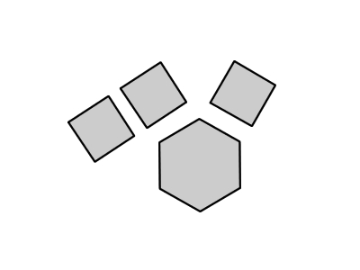

Image Parallax Summary
The jQuery Image Parallax project is a plugin that gives an illusion of depth to an image with transparency (PNG, GIF) by repeating it and animating movement.
You can either use the built-in duplication or supply a list of images to be used by the animation.
Using a single image

Using many images
In this example, vertical movement has been switched off.
Options
- classmodifier
- Used to apply class names to the elements created by the plugin. You only need to specify a class modifier if you have a name-clash.
- intensity
- The intensity of the effect. Set to "0.5" by default. "1" would scroll the background at the same speed as the content, "0.5" makes the background move more slowly than the content. "1.5" makes the background move faster than the content. Sensible values range from "0.1" to "2.5".
- images
- Used to supply a list of images to be used, if multiple images are desired.
- numberoflayers
- When a single image is being used, the number of layers to create.
- allowVertical
- Whether vertical movement is allowed.
- allowHorizontal
- Whether horizontal movement is allowed.